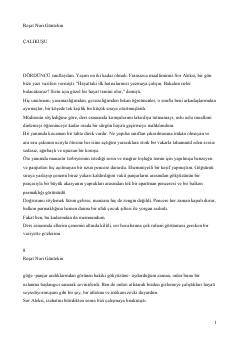

ÇFeridaning hayoti va sarguzashtlari bayon etilgan mashhur turk romani.
Ushbu asr turk adabiyotining klassik namunalaridan biri bo'lib, bosh qahramon Feridaning hayoti, boshidan kechirgan sinovlari va sarguzashtlari haqida hikoya qiladi. Muallif asarda o'ziga xos uslubda yosh qizning tarbiyasi, dunyoqarashi va jamiyatdagi o'rnini ochib beradi.